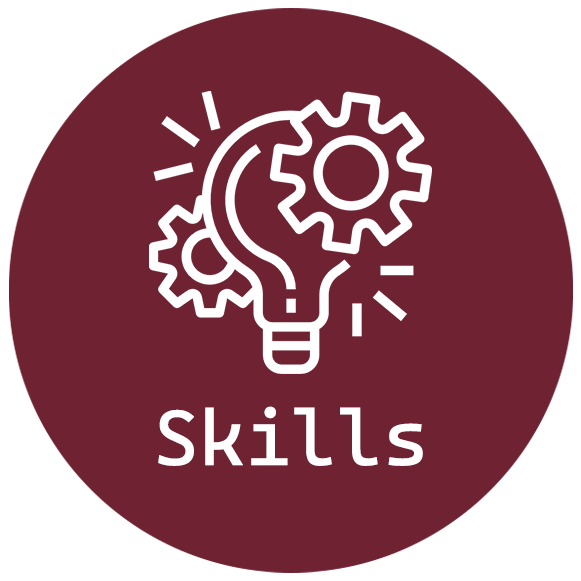
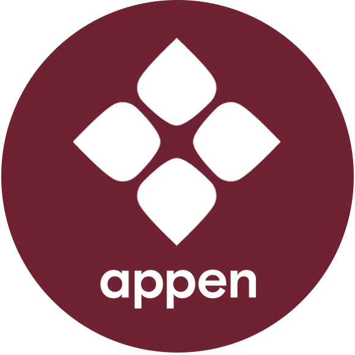
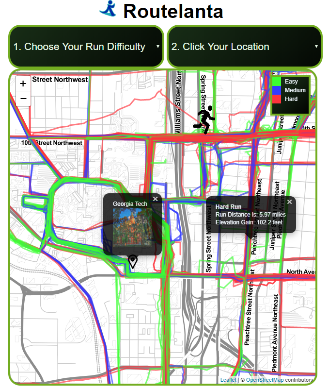
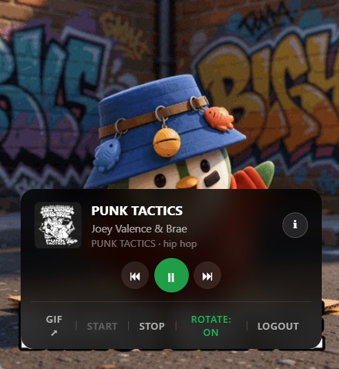
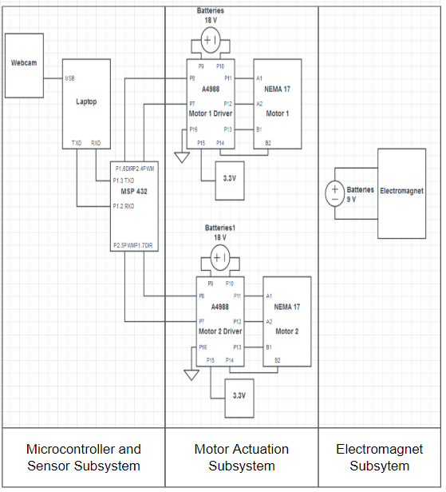
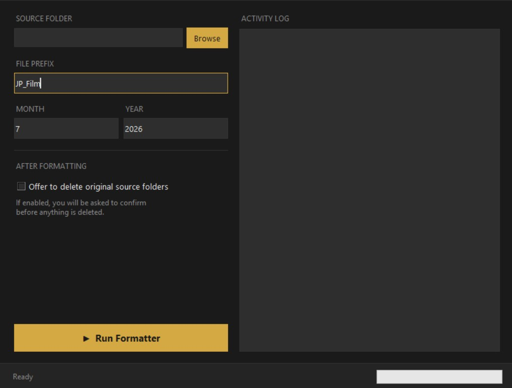
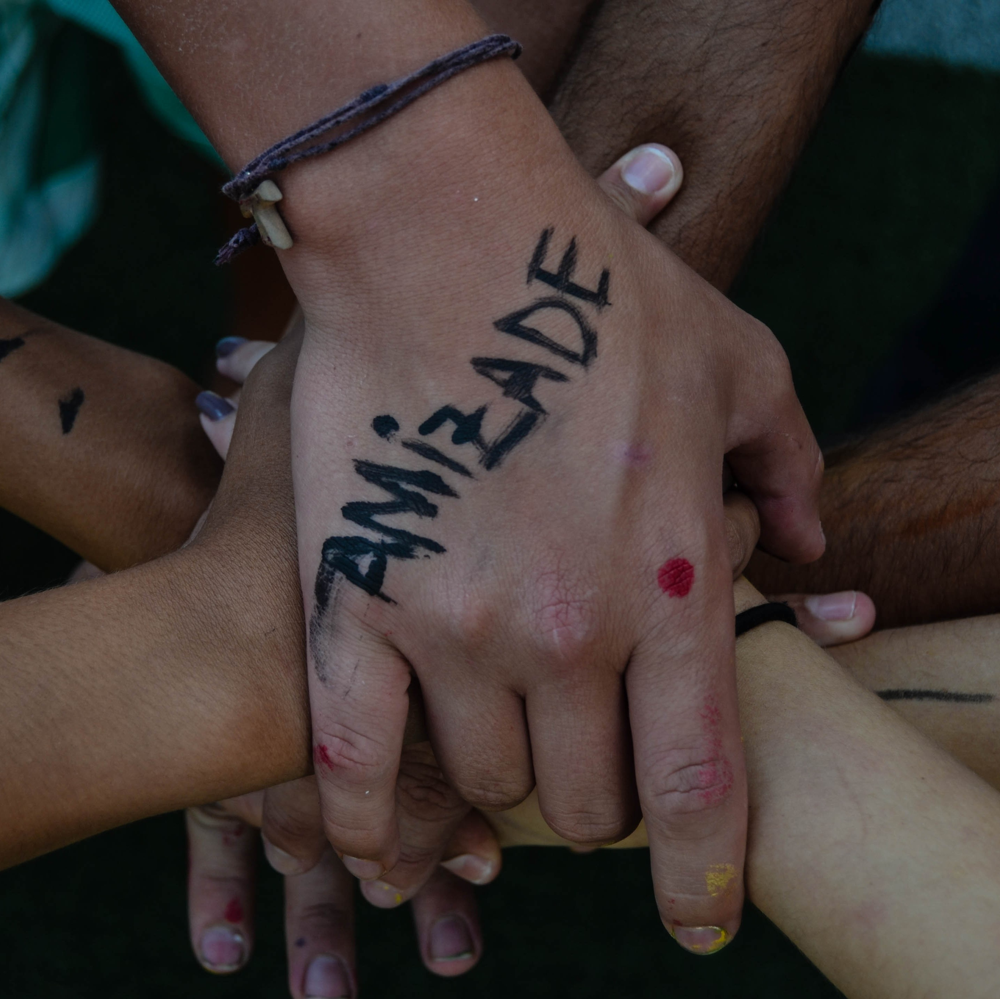

Solutions Architect and Professional Services Engineer with 6 years of experience delivering enterprise AI, data, and SaaS solutions across presales, technical implementation, and post-sales execution.
I specialize in owning complex, high-value B2B opportunities end-to-end, from requirements gathering, technical scoping, and SOW development all the way through delivery, while aligning cross-functional teams across Sales, Engineering, Operations, Legal, Procurement, and Project Management. I have worked with Fortune 500 and high-growth enterprise clients across AI, cybersecurity, cloud computing, and conversational AI industries, building presales and post-sales operational infrastructure that scaled teams and improved efficiency.
On the technical side, I bring hands-on experience in Python, JavaScript, SQL, PySpark, OpenCV, and more, with a background building ETL pipelines, annotation pipelines, AI training datasets, automation tools, and data analysis utilities across AWS and GCP. I hold a BS in Mechanical Engineering from Georgia Tech, which gives me a strong foundation for bridging technical feasibility with business requirements.
Outside of work I enjoy building tools, exploring new technologies, and finding ways to make complex systems simpler and more efficient.

Program Languages
- Python
- JavaScript
- HTML
- CSS
- C
- SQL
- MATLAB
Framework/Library
- PySpark
- Pandas
- OpenCV
- React.js
- Flask
- D3.js
- Liquid
Software/Tools
- Git
- AWS Lambda
- AWS S3
- Mode SQL
- Tableau
- JIRA
- Oracle VM VirtualBox
Hardware
- Raspberry Pi
- Arduino
- TI MSP Launchpad
- Circuit Design
Design
- Adobe Photoshop
- Adobe Premier Rush
- Inkscape
- SolidWorks
- AutoCAD
Languages
- English
- Spanish
- Portuguese
DEFINED.AI
Solutions Architect
August 2024 – May 2026
- Designed end-to-end technical solution architecture and presales engagements for $1M+ AI and data opportunities, covering requirements gathering, POC development, reference architecture design, technical scoping, cost modeling, workflow design, risk analysis, and SOW preparation across Fortune 500 and high-growth enterprise clients in AI, cybersecurity, cloud, and conversational AI.
- Owned the proposal lifecycle for data collection, annotation, and evaluation projects, translating client use cases into data requirements and end-to-end AI solutions; served as creator and owner of the Solution Architecture document for flagship enterprise clients across speech/ASR, TTS, NLP, computer vision, and conversational AI domains.
- Scoped and delivered 75+ enterprise technical proposals out of 100+ opportunities valued up to $2M+, spanning multimodal and multilingual data collection across speech, NLP, computer vision, and sensor data in industrial, automotive, robotics, medical, audio, video, and IoT domains.
- Contributed to a large-scale POV data-collection program for a strategic robotics client, coordinating pricing, procurement, technical requirements, and draft SOW preparation for a multimodal initiative.
- Architected and standardized the Presales operational infrastructure: Jira administration, Salesforce-Jira integration, automated SLA dashboards, JQL reporting, leadership dashboards, and reusable proposal frameworks — scaling the team from 2 to 7 members.
- Engineered a constants table and improved the cost analysis spreadsheet to standardize pricing calculations, improving accuracy and accelerating proposal turnaround.
- Designed and standardized Presales artifact templates including proposals, cost sheets, execution diagrams, project timelines, and segmented All-in-One templates by project and data type.
- Built Python automation and data-analysis tools including a partner-dataset web scraper, an OTS dataset filtering/recombination script, marketplace metadata analysis scripts, and a Japanese language frequency analyzer — bypassing 2–5 day operations bottlenecks and earning VP-level trust as the go-to technical resource.
- Onboarded within days to independently manage 14 concurrent enterprise opportunities in week one; consistently maintained a rotating portfolio of 20–30+ active opportunities while meeting SLA commitments.
- Co-developed a go-to-market campaign for the video game industry with an Account Executive, generating 5+ opportunities with Fortune 500 gaming and entertainment clients within ~2 weeks of launch.
- Served as the most tenured Solutions Architect (18 months) and de facto technical lead, training and mentoring the majority of the SA team as it scaled from 2 to 7.
- Received Exceeded Expectations ratings across Technical Skills, Quality of Work, and Problem-Solving.
LEADSPACE
Professional Services Engineer
January 2022 – May 2024
- Prevented customer churn and generated $750K+ in upsell opportunities by delivering customized technical solutions through rapid problem diagnosis, creative pipeline development, and proactive stakeholder communication.
- Rescued a poorly scoped, at-risk enterprise account from churning and converted it to renewed and upsold business, directly contributing to a $200K+ upsell by developing custom code and a unified golden-record post-processing pipeline.
- Refactored legacy Airflow DAGs and real-time data pipeline workflows, reducing technical debt and total cost of ownership across the platform's two largest revenue-generating projects valued at $2M+.
- Built a Python-based match level confidence scoring algorithm using PySpark, Pandas, and fuzzy matching, enabling clients to assess data record reliability and prioritize high-quality leads.
- Engineered scalable ETL pipelines and automated Databricks workflows using PySpark, Pandas, SQL, Kibana, Jenkins, Postman, SFTP, and Google Cloud to process and validate 14M+ customer records for lead scoring, account matching, and marketing analytics.
- Created custom code to unify and de-duplicate 14M+ rows of client data from disparate systems into a single source of truth using collapsed golden records.
- Deployed and maintained Databricks workflows automating daily data refreshes, aggregating lead generation metrics, and monitoring data quality violations.
- Developed data quality analysis and preprocessing tools in Databricks using Python, PySpark, Pandas, iPywidgets, SQL, and the Kibana Elastic API, including QA scripts and formatting scripts to clean and prepare records before pipeline runs.
- Built reusable EDA and pipeline primitives over the core Google Cloud data warehouse, reducing demo preparation and implementation costs across multiple client projects.
- Partnered cross-functionally with Customer Success, Product, and Engineering to deliver enterprise technical solutions across accounts in tech, hospitality, security, communications, and financial services sectors.
- Reverse-engineered and rescued inherited high-priority projects with no existing documentation, repairing broken datasets and de-duplicating and mapping technologies using fuzzy scoring.
- Unified 13M+ records across multiple datasets for enterprise clients, implementing custom code to match each client's downstream data format requirements.
- Contributed to hiring and onboarding: updated the technical interview, interviewed candidates, and documented standardized unification workflows for Sales, Customer Success, and onboarding teams.

APPEN
Professional Services Engineer
July 2020 – January 2022
- Developed and managed end-to-end ETL and data pipelines for AI and ML training datasets across all modalities (image, audio, video, text, sensor metadata), building Python preprocessing and postprocessing scripts and AWS-based delivery pipelines across 5 major enterprise accounts.
- Designed and implemented JavaScript, D3, jQuery, and Liquid Logic annotation task configurations and built custom UIs for AI training data pipelines, improving performance and reliability of enterprise clients' AI models.
- Developed Python OpenCV scripts for OCR processing across 25,000+ documents, converting platform annotation outputs to JSON COCO format for downstream model training.
- Engineered a Python, JavaScript, and OpenCV computer vision algorithm for persistent object tracking IDs across camera frames — extending out-of-frame tolerance from 1 second to over 1 minute and improving processing performance by 100% through multiprocessing optimization, fulfilling a requirement other vendors were unable to meet.
- Built a custom annotator review UI using JavaScript, D3, and jQuery enabling trusted annotators to validate and correct data from less experienced annotators, ensuring high-quality AI training datasets.
- Served as in-house OCR specialist, leading multiple optical character recognition pilots and developing visual algorithms in OpenCV to correct annotation errors and clean bounding boxes.
- Rescued an at-risk enterprise proof of concept by designing scalable AWS-based automated processing pipelines using webhooks and REST API integrations, clarifying technical requirements, and rebuilding client trust — resulting in a signed contract.
- Stepped in as interim hiring manager following high attrition: revamped the interview process, redesigned technical assessments, interviewed 10 candidates, hired and onboarded 5 engineers.
- Evangelized software engineering and DevOps best practices by introducing GitHub version control, implementing CI/CD pipelines, and optimizing script performance across the team.
GEORGIA TECH RESEARCH INSTITUTE
CIPHER Student Assistant
October 2018 – January 2020
- Prototyped Software Defined Network (SDN) techniques using software image OpenWrt with a Linksys WRT32X router, Open vSwitch with Raspberry Pi, and Zodiac FX OpenFlow Switch for military communication
- Implemented a keylogging program in C in order to test how efficient a program can track keyboard inputs
- Learned Linux and Python to test and interact with multiple code base for existing and future projects
ARCHER WESTERN
Project Engineer Intern
May 2018 – October 2018
- Assisted project manager on Clear Creek West Sewer Improvement Project
- Routinely surveyed jobsite and operated DJI drone to monitor quality control, safety, and project development
- Managed engineering drawings and subcontractor quantities to track project's units complete for monthly cost report
Construction Estimator Intern
January 2018 – April 2018
- Analyzed engineering drawings and Department of Transportation (DOT) parameters for quantity take-offs using the On-Screen Take-Off program
- Appraised national projects based on scope changes including revision of specifications, standards, and quantities
- Produced regular reports regarding DOT bid specifications for $100,000,000+ DOT projects
- Managed intern team by designating job roles to meet project deadlines as liaison between interns and management
TI AUTOMOTIVE
Quality Engineer Intern
May 2016 – August 2016
- Directed a team of 5+ new hires to perform quality control tests in the BMW X5 G01 gas tank trial
- Executed 10+ tests to analyze quality of tanks and filler pipes daily
- Formulated and enforced new work protocol tests to analyze quality of gas tanks and filler pipes
- Trained new employees on proper testing operations and effectively using aforementioned work protocols
ROUTELANTA RUNNING APP
Routelanta is an interactive web app that visualizes running routes across Atlanta pulled from the Strava API, plotting hundreds of past runs on a live map and automatically classifying each one by difficulty using a Python data pipeline with K-means clustering on distance and elevation. Users can click a point of interest, like Piedmont Park or Georgia Tech, to see just the runs near it, or click anywhere on the map to filter routes by difficulty within that radius.

- Built an interactive web app that visualizes Strava-recorded running routes across Atlanta on a live Leaflet.js map, color-coded by difficulty
- Built a Python data pipeline (pandas, scikit-learn) that pulls activity data from the Strava API and applies K-means clustering on distance and elevation gain to automatically classify each run into Easy/Medium/Hard difficulty tiers
- Implemented location-based filtering so clicking anywhere on the map surfaces only routes passing within roughly 200 meters of that point, filtered by the selected difficulty level
- Added interactive points-of-interest markers for 8 Atlanta landmarks (Piedmont Park, Georgia Tech, Old Fourth Ward, and others) that isolate and display only the routes near that location
- Built a D3.js bar chart showing run counts per point of interest, with hover tooltips breaking down each location's easy/medium/hard run distribution
- Decoded and rendered Strava's encoded polyline route data into map-ready coordinate paths for hundreds of recorded runs
SPOTIFY TO VISUAL APP

Spotify GIF Player is a cross-platform desktop app that displays a fullscreen GIF matching the genre of whatever song is currently playing on Spotify, updating in real time as tracks change. Built with Tauri, React, and TypeScript, it layers Spotify, Last.fm, Giphy, and Klipy together for accurate genre detection and strong visual matches, all behind a secure one-time login.
- Built a cross-platform desktop app (Windows, macOS, Linux) that detects the genre of the currently playing Spotify track and displays a matching fullscreen GIF in real time with sub-second latency
- Implemented Spotify OAuth 2.0 with PKCE — no client secret exposed — with persistent token storage via the OS keychain and silent refresh on expiry, enabling one-time login across sessions
- Designed a multi-source genre resolution pipeline: Last.fm track.getTopTags as primary, Spotify artist genres as fallback, with noise-tag filtering, diacritic normalization, and alias-based matching to correctly resolve variants like "funk carioca" → Brazilian funk vs. American funk
- Built a dual-provider GIF search strategy (Giphy primary, Klipy fallback) with genre-to-visual-phrase mapping to improve fullscreen aesthetic quality over raw genre keyword searches
- Engineered GIF preloading with crossfade transitions so new GIFs appear instantly on track change without visible loading delay
- Added a metadata inspector panel with per-section raw JSON toggles, API call log with response times and HTTP status, and genre detection provenance showing source, raw tags, and search term used
FOLLOW THE DOT ROBOT
Follow the Dot Robot is an embedded systems project that uses a webcam and computer vision to guide a magnet-driven X-Y positioning robot in real time. A Python program using OpenCV detects colored markers on a surface and streams their coordinates over a serial (UART) connection to a TI MSP432 microcontroller running custom C firmware, which uses proportional control to drive stepper motors and move the robot toward the target position.

- A robot that detects and follows 2D movement of a colored pin within a system using stepper motors, motor driver, MSP Launchpad, and camera
- Movement of colored pin is detected using a camera with Python OpenCV running to send coordinates to the MSP Launchpad using UART communication
- A stepper motor control program written in C is flashed onto the MSP Launchpad to control the robot's pointer based on the coordinates the Python program dictated
DSLR File Format App

Film Formatter is a desktop app built in Python and Tkinter that solves a common photography workflow problem — DSLR cameras split shots across multiple SD card folders with repeating filenames, making manual consolidation slow and error-prone. It scans every source folder, groups files from the same shot across formats, and renames everything into a clean, organized output.
- Built a cross-platform desktop application in Python that automates renaming and organizing photo files copied from DSLR memory cards, replacing a manual process prone to overwrites and lost files
- Designed a file-grouping algorithm that detects related files across formats (e.g., JPG + RAW/NEF) belonging to the same shot and assigns them matching sequential IDs, while organizing output into per-format folders
- Separated business logic from UI (core.py vs. gui.py) so file-scanning, renaming, and copy logic could be tested and reused independently of the GUI
- Implemented multi-threaded file operations to keep the interface responsive during large batch transfers, with real-time progress tracking and logging
- Built a two-step confirmation safeguard before permanently deleting original source folders, reducing risk of accidental data loss
- Packaged and distributed the application as standalone executables for Windows, macOS, and Linux using PyInstaller, eliminating the need for end users to install Python


